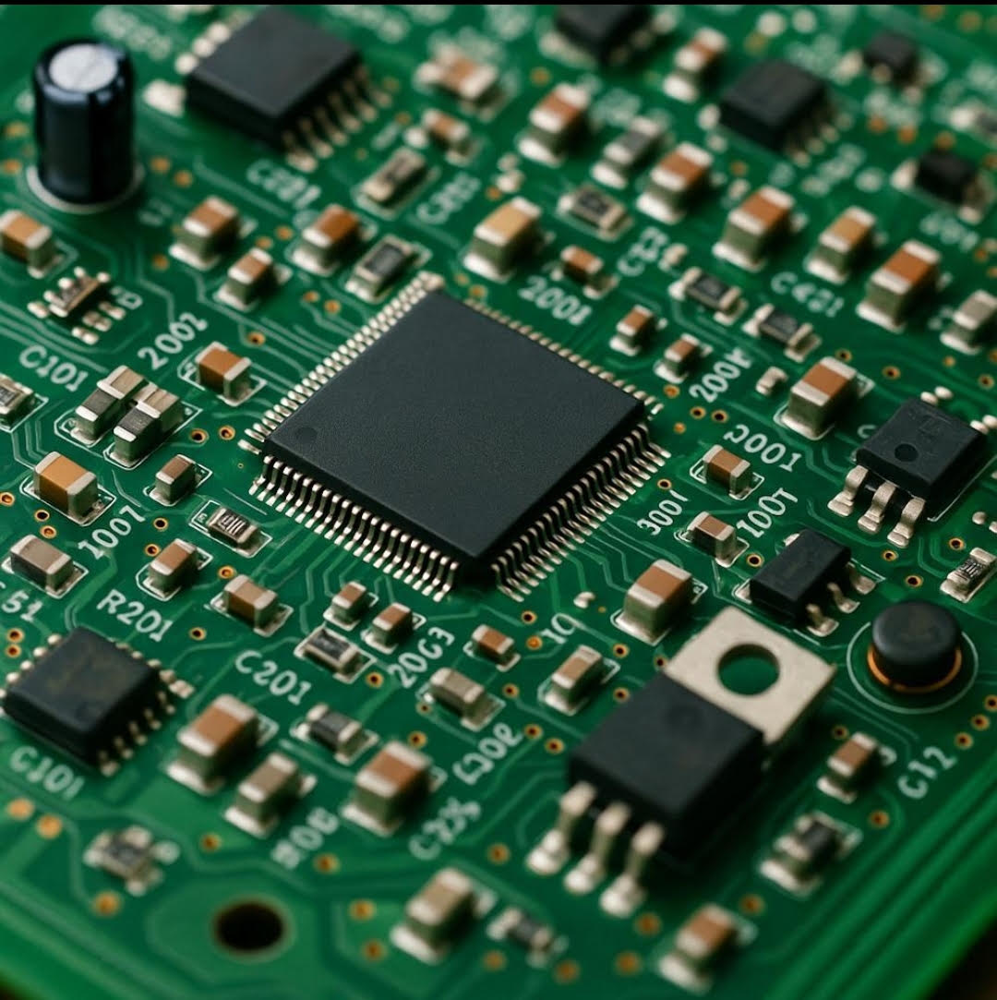

An educational inquiry into how continuous physical voltages become discrete digital states, and how mathematical cryptography protects the systems that compute them.
From Voltage to Verification: Bridging Electronic Signals and Information Security
Introduction: The Physical and the Abstract
Modern computing is frequently discussed in terms of high-level abstractions: cloud services, software applications, and mathematical algorithms. However, every digital calculation, secure transaction, and network transmission fundamentally originates as an analog electrical phenomenon within physical matter.
Before an operating system can execute an instruction or a cryptographic library can encrypt a transmission, physical hardware must establish stable, measurable electrical conditions. Charge carriers flowing through semiconductor channels must be translated into discrete binary states. Once stabilized, these binary states are manipulated through Boolean logic gates, organized into words of memory, and processed by synchronous clock cycles. Finally, to ensure that these states are preserved against unauthorized observation or alteration, cryptographic protocols apply rigorous mathematical transformations.

Figure 1: A physical printed circuit board (PCB) demonstrating the physical medium through which electrical currents are routed to represent digital states.
SIGNAL / CIPHER examines this technological bridge. By understanding how physical signals become discrete symbols, and how mathematical algorithms protect those symbols, engineering students and technology professionals gain an integrated perspective on system architecture and defensive cybersecurity.
Three Pillars of the Computing Stack
A rigorous understanding of digital systems requires examining three interconnected domains:
1. Hardware Foundations
Physical hardware translates the continuous laws of physics into the discrete binary abstraction. Voltage thresholds define logical ones and zeros, while networks of transistors form logic gates that execute arithmetic and control flow. Without physically sound silicon and clean signal propagation, reliable computation is impossible.
2. Cryptographic Principles
Cryptography provides the mathematical framework for securing data in transit and at rest. Through symmetric and asymmetric algorithms, hash functions, and digital signatures, cryptography transforms vulnerable plaintext into resistant ciphertext, guaranteeing confidentiality, integrity, and authenticity across untrusted communication channels.
3. System-Level Cybersecurity
Cybersecurity is the holistic operational discipline that ensures computing systems remain resilient against intelligent adversaries. It bridges hardware security (such as resisting physical tampering and side-channel analysis) and software security (such as preventing buffer overflows and protocol logic flaws) into a unified defense.
Interdependence of Hardware and Software Security
A central premise of secure engineering is that software security cannot exist in isolation from hardware reality. High-level security proofs regularly assume that the underlying processor operates as a deterministic, mathematically perfect black box. In the physical world, however, microprocessors emit heat, consume variable amounts of electrical current, take measurable amounts of time to switch states, and are susceptible to electromagnetic interference.
When physical hardware exhibits unintended side effects, the mathematical assurances of software algorithms can be bypassed entirely:
Side-Channel Leakage: A cryptographic algorithm may be mathematically unbreakable against brute-force cryptanalysis, yet an attacker monitoring micro-variations in power consumption or cache timing on the physical chip can extract private keys in milliseconds.
Transient Execution Vulnerabilities: Microarchitectural performance optimizations, such as speculative execution and out-of-order processing, have historically leaked sensitive memory across process boundaries despite strict operating system access controls.
Physical Fault Injection: Minor fluctuations in supply voltage or clock frequency can cause a processor to skip instruction execution, bypassing security checks without triggering conventional software exceptions.
Conversely, even the most physically hardened silicon provides little protection if the software executing upon it contains fundamental implementation flaws. Memory corruption errors, unvalidated input vectors, and misconfigured access credentials can compromise a system regardless of its hardware integrity. Truly resilient systems require mutual reinforcement: hardware mechanisms (such as hardware roots of trust, memory tagging, and isolated execution enclaves) supporting rigorously verified software implementations.
Authoritative Engineering Standards
Rigorous computer engineering relies on open, standardized methodologies that undergo exhaustive peer review by researchers, government agencies, and industrial bodies across the globe.
For official benchmarks in cryptographic standards, physical device security requirements, and national cybersecurity frameworks, refer directly to the National Institute of Standards and Technology (NIST), a non-regulatory federal agency of the U.S. Department of Commerce that establishes rigorous measurement and cybersecurity guidelines worldwide.